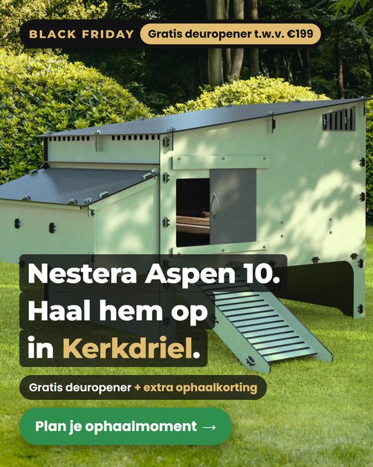
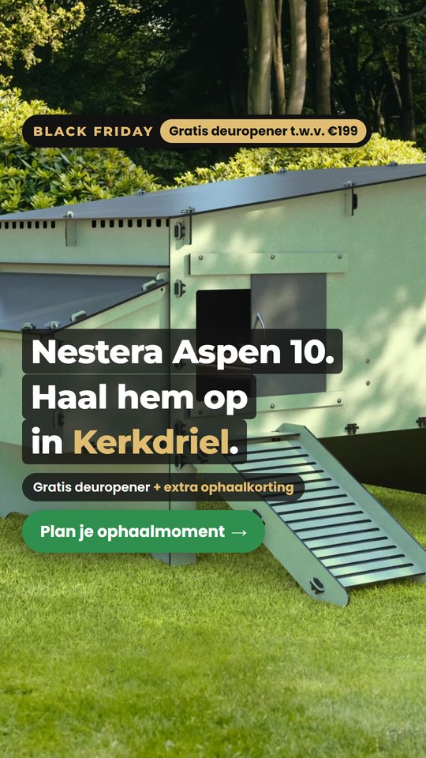

KippenvillaGesponsord
Black Friday bij Kippenvilla: haal je Aspen 10 op in Kerkdriel 🚗
Je krijgt de Smart Auto Door (t.w.v. €199) gratis, en omdat je hem zelf ophaalt nog extra korting erbovenop.
✅ Glad kunststof: bloedluis vindt bijna geen schuilplek
✅ In een kwartier schoon, nooit beitsen
✅ 10 jaar garantie
Alleen van 20 t/m 30 november.


1KIPPENVILLA.NLGratis deuropener + ophaalkortingNestera Aspen 10 · Black Friday
Meer informatie